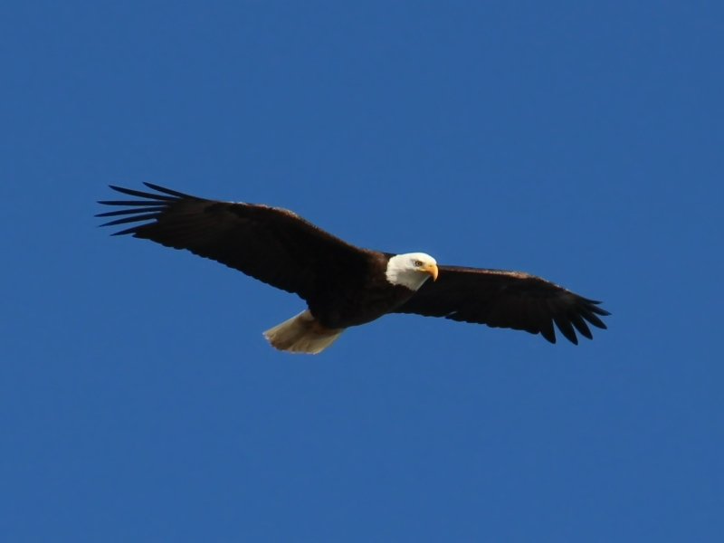
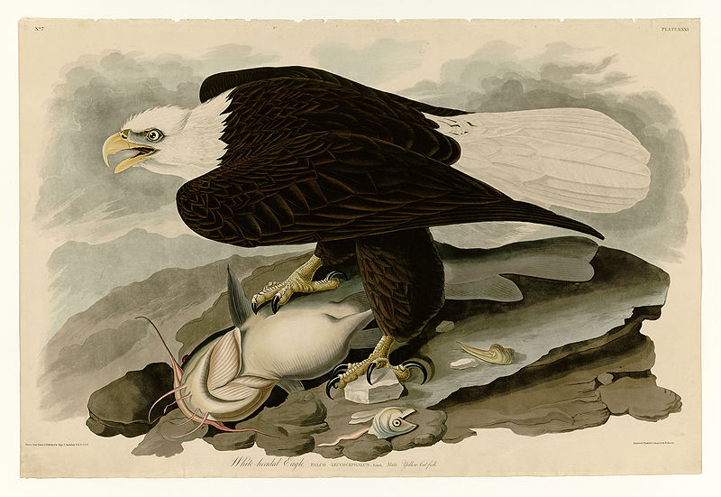
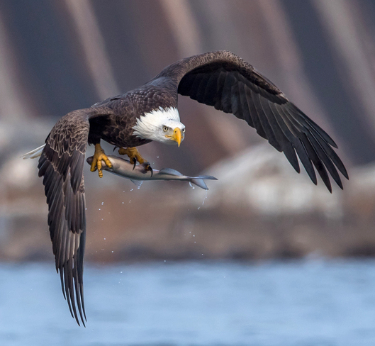
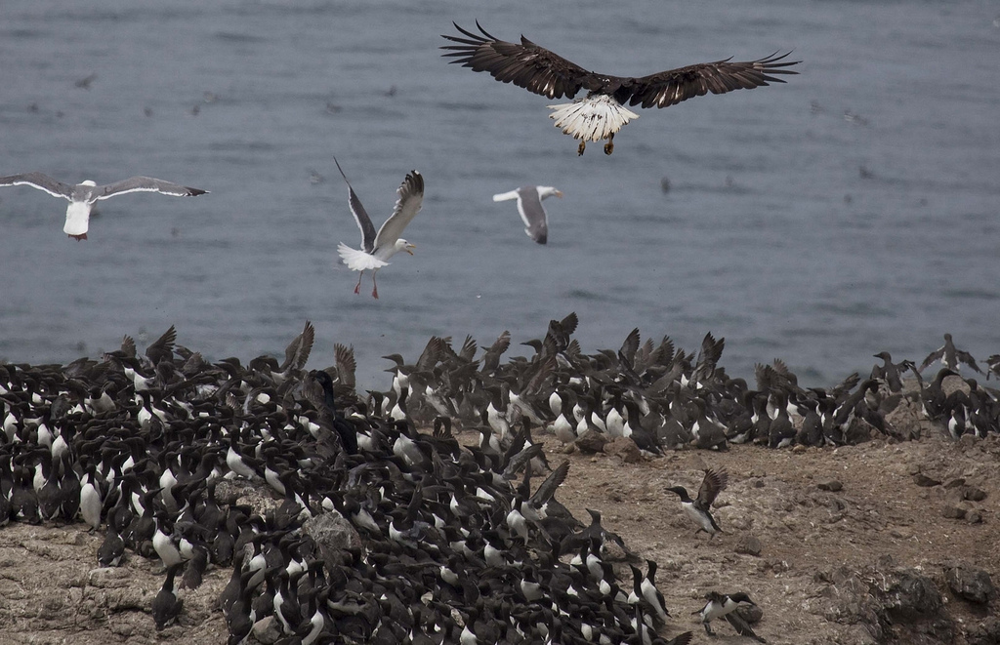
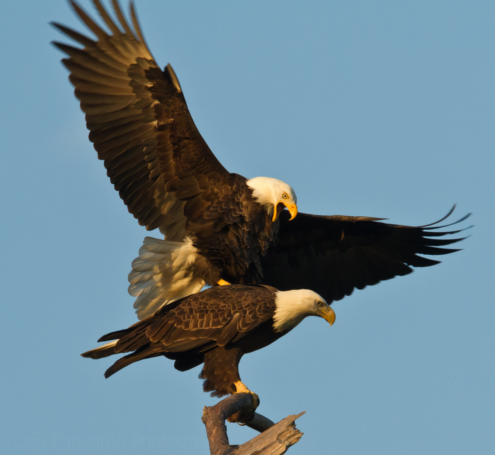

Bald eagle
The bald eagle (Haliaeetus leucocephalus) is a bird of prey found in North America. A sea eagle, it has two known subspecies and forms a species pair with the white-tailed eagle (Haliaeetus albicilla), which occupies the same niche as the bald eagle in the Palearctic. Its range includes most of Canada and Alaska, all of the contiguous United States, and northern Mexico. It is found near large bodies of open water with an abundant food supply and old-growth trees for nesting.
The bald eagle is an opportunistic feeder which subsists mainly on fish, which it swoops down upon and snatches from the water with its talons. It builds the largest nest of any North American bird and the largest tree nests ever recorded for any animal species, up to 4 m (13 ft) deep, 2.5 m (8.2 ft) wide, and 1 metric ton (1.1 short tons) in weight. Sexual maturity is attained at the age of four to five years.
Bald eagles are not actually bald; the name derives from an older meaning of the word, "white headed". The adult is mainly brown with a white head and tail. The sexes are identical in plumage, but females are about 25 percent larger than males. The yellow beak is large and hooked. The plumage of the immature is brown.
The bald eagle is the national bird of the United States of America and appears on its seal. In the late 20th century it was on the brink of extirpation in the contiguous United States. Populations have since recovered, and the species was removed from the U.S. government's list of endangered species on July 12, 1995, and transferred to the list of threatened species. It was removed from the List of Endangered and Threatened Wildlife in the contiguous states on June 28, 2007.

Taxonomy
The bald eagle is placed in the genus Haliaeetus (sea eagles), and gets both its common and specific scientific names from the distinctive appearance of the adult's head. Bald in the English name is from an older usage meaning "having white on the face or head" rather than "hairless", referring to the white head feathers contrasting with the darker body.[4] The genus name is New Latin: Haliaeetus (from the Ancient Greek: ἁλιάετος, romanized: haliaetos, lit. 'sea eagle'),[5] and the specific name, leucocephalus, is Latinized (Ancient Greek: λευκός, romanized: leukos, lit. 'white')[6] and (κεφαλή, kephalḗ, 'head').
The bald eagle was one of the many species originally described by Carl Linnaeus in his 18th-century work Systema Naturae, under the name Falco leucocephalus.
The bald eagle forms a species pair with the white-tailed eagle of Eurasia. This species pair consists of a white-headed and a tan-headed species of roughly equal size; the white-tailed eagle also has overall somewhat paler brown body plumage. The two species fill the same ecological niche in their respective ranges. The pair diverged from other sea eagles at the beginning of the Early Miocene (c. 10 Ma BP) at the latest, but possibly as early as the Early/Middle Oligocene, 28 Ma BP, if the most ancient fossil record is correctly assigned to this genus.
Description
The plumage of an adult bald eagle is evenly dark brown with a white head and tail. The tail is moderately long and slightly wedge-shaped. Males and females are identical in plumage coloration, but sexual dimorphism is evident in the species, in that females are 25% larger than males. The beak, feet and irises are bright yellow. The legs are feather-free, and the toes are short and powerful with large talons. The highly developed talon of the hind toe is used to pierce the vital areas of prey while it is held immobile by the front toes. The beak is large and hooked, with a yellow cere. The adult bald eagle is unmistakable in its native range. The closely related African fish eagle (Haliaeetus vocifer) (from far outside the bald eagle's range) also has a brown body (albeit of somewhat more rufous hue), white head and tail, but differs from the bald eagle in having a white chest and black tip to the bill.
The plumage of the immature is a dark brown overlaid with messy white streaking until the fifth (rarely fourth, very rarely third) year, when it reaches sexual maturity.[10][14] Immature bald eagles are distinguishable from the golden eagle (Aquila chrysaetos), the only other very large, non-vulturine raptorial bird in North America, in that the former has a larger, more protruding head with a larger beak, straighter edged wings which are held flat (not slightly raised) and with a stiffer wing beat and feathers which do not completely cover the legs. When seen well, the golden eagle is distinctive in plumage with a more solid warm brown color than an immature bald eagle, with a reddish-golden patch to its nape and (in immature birds) a highly contrasting set of white squares on the wing.
The bald eagle has sometimes been considered the largest true raptor (accipitrid) in North America. The only larger species of raptor-like bird is the California condor (Gymnogyps californianus), a New World vulture which today is not generally considered a taxonomic ally of true accipitrids. However, the golden eagle, averaging 4.18 kg (9.2 lb) and 63 cm (25 in) in wing chord length in its American race (Aquila chrysaetos canadensis), is merely 455 g (1.003 lb) lighter in mean body mass and exceeds the bald eagle in mean wing chord length by around 3 cm (1.2 in). Additionally, the bald eagle's close cousins, the relatively longer-winged but shorter-tailed white-tailed eagle and the overall larger Steller's sea eagle (Haliaeetus pelagicus), may, rarely, wander to coastal Alaska from Asia.
The bald eagle has a body length of 70–102 cm (28–40 in). Typical wingspan is between 1.8 and 2.3 m (5 ft 11 in and 7 ft 7 in) and mass is normally between 3 and 6.3 kg (6.6 and 13.9 lb). Females are about 25% larger than males, averaging as much as 5.6 kg (12 lb), and against the males' average weight of 4.1 kg (9.0 lb).
The size of the bird varies by location and generally corresponds with Bergmann's rule: the species increases in size further away from the equator and the tropics. For example, eagles from South Carolina average 3.27 kg (7.2 lb) in mass and 1.88 m (6 ft 2 in) in wingspan, smaller than their northern counterparts. One field guide in Florida listed similarly small sizes for bald eagles there, at about 4.13 kg (9.1 lb). Of intermediate size, 117 migrant bald eagles in Glacier National Park were found to average 4.22 kg (9.3 lb) but this was mostly (possibly post-dispersal) juvenile eagles, with 6 adults here averaging 4.3 kg (9.5 lb). Wintering eagles in Arizona (winter weights are usually the highest of the year since, like many raptors, they spend the highest percentage of time foraging during winter) were found to average 4.74 kg (10.4 lb).

Range
The bald eagle's natural range covers most of North America, including most of Canada, all of the continental United States, and northern Mexico. It is the only sea eagle endemic to North America. Occupying varied habitats from the bayous of Louisiana to the Sonoran Desert and the eastern deciduous forests of Quebec and New England, northern birds are migratory, while southern birds are resident, remaining on their breeding territory all year. At minimum population, in the 1950s, it was largely restricted to Alaska, the Aleutian Islands, northern and eastern Canada, and Florida. From 1966 to 2015 bald eagle numbers increased substantially throughout its winter and breeding ranges, and as of 2018 the species nests in every continental state and province in the United States and Canada.
The majority of bald eagles in Canada are found along the British Columbia coast while large populations are found in the forests of Alberta, Saskatchewan, Manitoba and Ontario. Bald eagles also congregate in certain locations in winter. From November until February, one to two thousand birds winter in Squamish, British Columbia, about halfway between Vancouver and Whistler. The birds primarily gather along the Squamish and Cheakamus Rivers, attracted by the salmon spawning in the area. Similar congregations of wintering bald eagles at open lakes and rivers, wherein fish are readily available for hunting or scavenging, are observed in the northern United States.
It has occurred as a vagrant twice in Ireland; a juvenile was shot illegally in Fermanagh on January 11, 1973 (misidentified at first as a white-tailed eagle), and an exhausted juvenile was captured in Kerry on November 15, 1987.
Habitat
The bald eagle occurs during its breeding season in virtually any kind of American wetland habitat such as seacoasts, rivers, large lakes or marshes or other large bodies of open water with an abundance of fish. Studies have shown a preference for bodies of water with a circumference greater than 11 km (7 mi), and lakes with an area greater than 10 km2 (4 sq mi) are optimal for breeding bald eagles.
The bald eagle typically requires old-growth and mature stands of coniferous or hardwood trees for perching, roosting, and nesting. Tree species reportedly is less important to the eagle pair than the tree's height, composition and location. Perhaps of paramount importance for this species is an abundance of comparatively large trees surrounding the body of water. Selected trees must have good visibility, be over 20 m (66 ft) tall, an open structure, and proximity to prey. If nesting trees are in standing water such as in a mangrove swamp, the nest can be located fairly low, at as low 6 m (20 ft) above the ground. In a more typical tree standing on dry ground, nests may be located from 16 to 38 m (52 to 125 ft) in height. In Chesapeake Bay, nesting trees averaged 82 cm (32 in) in diameter and 28 m (92 ft) in total height, while in Florida, the average nesting tree stands 23 m (75 ft) high and is 23 cm (9.1 in) in diameter. Trees used for nesting in the Greater Yellowstone area average 27 m (89 ft) high. Trees or forest used for nesting should have a canopy cover of no more than 60%, and no less than 20%, and be in close proximity to water. Most nests have been found within 200 m (660 ft) of open water. The greatest distance from open water recorded for a bald eagle nest was over 3 km (1.9 mi), in Florida.
Bald eagle nests are often very large in order to compensate for size of the birds. The largest recorded nest was found in Florida in 1963, and was measured at nearly 10 feet wide and 20 feet deep.
In Florida, nesting habitats often consist of Mangrove swamps, the shorelines of lakes and rivers, pinelands, seasonally flooded flatwoods, hardwood swamps, and open prairies and pastureland with scattered tall trees. Favored nesting trees in Florida are slash pines (Pinus elliottii), longleaf pines (P. palustris), loblolly pines (P. taeda) and cypress trees, but for the southern coastal areas where mangroves are usually used. In Wyoming, groves of mature cottonwoods or tall pines found along streams and rivers are typical bald eagle nesting habitats. Wyoming eagles may inhabit habitat types ranging from large, old-growth stands of ponderosa pines (Pinus ponderosa) to narrow strips of riparian trees surrounded by rangeland. In Southeast Alaska, Sitka spruce (Picea sitchensis) provided 78% of the nesting trees used by eagles, followed by hemlocks (Tsuga) at 20%. Increasingly, eagles nest in man-made reservoirs stocked with fish.
The bald eagle is usually quite sensitive to human activity while nesting, and is found most commonly in areas with minimal human disturbance. It chooses sites more than 1.2 km (0.75 mi) from low-density human disturbance and more than 1.8 km (1.1 mi) from medium- to high-density human disturbance. However, bald eagles will occasionally nest in large estuaries or secluded groves within major cities, such as Hardtack Island on the Willamette River in Portland, Oregon or John Heinz National Wildlife Refuge at Tinicum in Philadelphia, Pennsylvania, which are surrounded by a great quantity of human activity. Even more contrary to the usual sensitivity to disturbance, a family of bald eagles moved to the Harlem neighborhood in New York City in 2010.
While wintering, bald eagles tend to be less habitat and disturbance sensitive. They will commonly congregate at spots with plentiful perches and waters with plentiful prey and (in northern climes) partially unfrozen waters. Alternately, non-breeding or wintering bald eagles, particularly in areas with a lack of human disturbance, spend their time in various upland, terrestrial habitats sometimes quite far away from waterways. In the northern half of North America (especially the interior portion), this terrestrial inhabitance by bald eagles tends to be especially prevalent because unfrozen water may not be accessible. Upland wintering habitats often consist of open habitats with concentrations of medium-sized mammals, such as prairies, meadows or tundra, or open forests with regular carrion access
Behavior
The bald eagle is a powerful flier, and soars on thermal convection currents. It reaches speeds of 56–70 km/h (35–43 mph) when gliding and flapping, and about 48 km/h (30 mph) while carrying fish. Its dive speed is between 120–160 km/h (75–99 mph), though it seldom dives vertically. Regarding their flying abilities, despite being morphologically less well adapted to faster flight than golden eagles (especially during dives), the bald eagle is considered surprisingly maneuverable in flight. Bald eagles have also been recorded catching up to and then swooping under geese in flight, turning over and thrusting their talons into the other bird's breast. It is partially migratory, depending on location. If its territory has access to open water, it remains there year-round, but if the body of water freezes during the winter, making it impossible to obtain food, it migrates to the south or to the coast. A number of populations are subject to post-breeding dispersal, mainly in juveniles; Florida eagles, for example, will disperse northwards in the summer. The bald eagle selects migration routes which take advantage of thermals, updrafts, and food resources. During migration, it may ascend in a thermal and then glide down, or may ascend in updrafts created by the wind against a cliff or other terrain. Migration generally takes place during the daytime, usually between the local hours of 8:00 a.m. and 6:00 p.m., when thermals are produced by the sun.
Diet and feeding
The bald eagle is an opportunistic carnivore with the capacity to consume a great variety of prey. Fish often comprise most of the eagle's diet throughout their range.[55] In 20 food habit studies across the species' range, fish comprised 56% of the diet of nesting eagles, birds 28%, mammals 14% and other prey 2%.[56] More than 400 species are known to be included in the bald eagle's prey spectrum, far more than its ecological equivalent in the Old World, the white-tailed eagle, is known to take. Despite its considerably lower population, the bald eagle may come in second amongst all North American accipitrids, slightly behind only the red-tailed hawk, in number of prey species recorded.
Behavior
To hunt fish, the eagle swoops down over the water and snatches the fish out of the water with its talons. They eat by holding the fish in one claw and tearing the flesh with the other. Eagles have structures on their toes called spicules that allow them to grasp fish. Osprey also have this adaptation. Bird prey may occasionally be attacked in flight, with prey up to the size of Canada geese attacked and killed in mid-air. It has been estimated that the gripping power (pounds by square inch) of the bald eagle is ten times greater than that of a human. Bald eagles can fly with fish at least equal to their own weight, but if the fish is too heavy to lift, the eagle may be dragged into the water. It may swim to safety, in some cases pulling the catch along to the shore as it swims, but some eagles drown or succumb to hypothermia. Many sources claim that bald eagles, like all large eagles, cannot normally take flight carrying prey more than half of their own weight unless aided by favorable wind conditions. On numerous occasions, when large prey such as large fish including mature salmon or geese are attacked, eagles have been seen to make contact and then drag the prey in a strenuously labored, low flight over the water to a bank, where they then finish off and dismember the prey. When food is abundant, an eagle can gorge itself by storing up to 1 kg (2.2 lb) of food in a pouch in the throat called a crop. Gorging allows the bird to fast for several days if food becomes unavailable. Occasionally, bald eagles may hunt cooperatively when confronting prey, especially relatively large prey such as jackrabbits or herons, with one bird distracting potential prey, while the other comes behind it in order to ambush it. While hunting waterfowl, bald eagles repeatedly fly at a target and cause it to dive repeatedly, hoping to exhaust the victim so it can be caught (white-tailed eagles have been recorded hunting waterfowl in the same way). When hunting concentrated prey, a successful catch often results in the hunting eagle being pursued by other eagles and needing to find an isolated perch for consumption if it is able to carry it away successfully.
Fish
In Southeast Alaska, fish comprise approximately 66% of the year-round diet of bald eagles and 78% of the prey brought to the nest by the parents. Eagles living in the Columbia River Estuary in Oregon were found to rely on fish for 90% of their dietary intake. At least 100 species of fish have been recorded in the bald eagle's diet. From observation in the Columbia River, 58% of the fish were caught alive by the eagle, 24% were scavenged as carcasses and 18% were pirated away from other animals.
 In the Pacific Northwest, spawning trout and salmon provide most of the bald eagles' diet from late summer throughout fall. Though bald eagles occasionally catch live salmon, they usually scavenge spawned salmon carcass. Southeast Alaskan eagles largely prey on pink salmon (Oncorhynchus gorbuscha), coho salmon (O. kisutch) and, more locally, sockeye salmon (O. nerka), with Chinook salmon (O. tshawytscha). Due to the Chinook salmon's large size (12 to 18 kg (26 to 40 lb) average adult size) probably being taken only as carrion and a single carcass can attract several eagles. Also important in the estuaries and shallow coastlines of southern Alaska are Pacific herring (Clupea pallasii), Pacific sand lance (Ammodytes hexapterus) and eulachon (Thaleichthys pacificus). In Oregon's Columbia River Estuary, the most significant prey species were largescale suckers (Catostomus macrocheilus) (17.3% of the prey selected there), American shad (Alosa sapidissima; 13%) and common carp (Cyprinus carpio; 10.8%). Eagles living in the Chesapeake Bay in Maryland were found to subsist largely on American gizzard shad (Dorosoma cepedianum), threadfin shad (Dorosoma petenense) and white bass (Morone chrysops). Floridian eagles have been reported to prey on catfish, most prevalently the brown bullhead (Ameiurus nebulosus) and any species in the genus Ictalurus as well as mullet, trout, needlefish, and eels. Chain pickerels (Esox niger) and white suckers (Catostomus commersonii) are frequently taken in interior Maine. Wintering eagles on the Platte River in Nebraska preyed mainly on American gizzard shads and common carp. Bald eagles are also known to eat the following fish species: rainbow trout (Oncorhynchus mykiss), white catfish (Ameiurus catus), rock greenling (Hexagrammos lagocephalus), Pacific cod (Gadus macrocephalus), Atka mackerel (Pleurogrammus monopterygius), largemouth bass (Micropterus salmoides), northern pike (Esox lucius), striped bass (Morone saxatilis), dogfish shark (Squalidae.sp) and Blue walleye (Sander vitreus).
Benthic fishes such as catfish are usually consumed after they die and float to the surface, though while temporarily swimming in the open may be more vulnerable to predation than most fish since their eyes focus downwards. Bald eagles also regularly exploit water turbines which produce battered, stunned or dead fish easily consumed. Predators who leave behind scraps of dead fish that they kill, such as brown bears (Ursus arctos), gray wolves (Canis lupus) and red foxes (Vulpes vulpes), may be habitually followed in order to scavenge the kills secondarily. Once North Pacific salmon die off after spawning, usually local bald eagles eat salmon carcasses almost exclusively. Eagles in Washington need to consume 489 g (1.078 lb) of fish each day for survival, with adults generally consuming more than juveniles and thus reducing potential energy deficiency and increasing survival during winter.
Birds
Behind fish, the next most significant prey base for bald eagles are other waterbirds. The contribution of such birds to the eagle's diet is variable, depending on the quantity and availability of fish near the water's surface. Waterbirds can seasonally comprise from 7% to 80% of the prey selection for eagles in certain localities. Overall, birds are the most diverse group in the bald eagle's prey spectrum, with 200 prey species recorded.
Bird species most preferred as prey by eagles tend to be medium-sized, such as western grebes (Aechmophorus occidentalis), mallards (Anas platyrhynchos), and American coots (Fulica americana) as such prey is relatively easy for the much larger eagles to catch and fly with. American herring gull (Larus smithsonianus) are the favored avian prey species for eagles living around Lake Superior. Black ducks (Anas rubripes), common eiders (Somateria mollissima), and double-crested cormorants (Phalacrocorax auritus) are also frequently taken in coastal Maine and velvet scoter (Melanitta fusca) was dominant prey in San Miguel Island
Due to easy accessibility and lack of formidable nest defense by such species, bald eagles are capable of preying on such seabirds at all ages, from eggs to mature adults, and they can effectively cull large portions of a colony.[94] Along some portions of the North Pacific coastline, bald eagles which had historically preyed mainly kelp-dwelling fish and supplementally sea otter (Enhydra lutris) pups are now preying mainly on seabird colonies since both the fish (possibly due to overfishing) and otters (cause unknown) have had precipitous population declines, causing concern for seabird conservation. Because of this more extensive predation, some biologist has expressed concern that murres are heading for a "conservation collision" due to heavy eagle predation. Eagles have been confirmed to attack nocturnally active, burrow-nesting seabird species such as storm petrels and shearwaters by digging out their burrows and feeding on all animals they find inside. If a bald eagle flies close by, waterbirds will often fly away en masse, though in other cases they may seemingly ignore a perched eagle. when the birds fly away from a colony, this exposed their unprotected eggs and nestlings to scavengers such as gulls.
Reproduction
Bald eagles are sexually mature at four or five years of age. When they are old enough to breed, they often return to the area where they were born. It is thought that bald eagles mate for life. However, if one member of a pair dies or disappears, the survivor will choose a new mate. A pair which has repeatedly failed in breeding attempts may split and look for new mates. Bald eagle courtship involves elaborate, spectacular calls and flight displays by the males. The flight includes swoops, chases, and cartwheels, in which they fly high, lock talons, and free-fall, separating just before hitting the ground. Usually, a territory defended by a mature pair will be 1 to 2 km (0.62 to 1.24 mi) of waterside habitat.
Compared to most other raptors, which mostly nest in April or May, bald eagles are early breeders: nest building or reinforcing is often by mid-February, egg laying is often late February (sometimes during deep snow in the North), and incubation is usually mid-March and early May. Eggs hatch from mid April to early May, and the young fledge late June to early July.[18] The nest is the largest of any bird in North America; it is used repeatedly over many years and with new material added each year may eventually be as large as 4 m (13 ft) deep, 2.5 m (8.2 ft) across and weigh 1 metric ton (1.1 short tons). One nest in Florida was found to be 6.1 m (20 ft) deep, 2.9 meters (9.5 ft) across, and to weigh 3 short tons (2.7 metric tons). This nest is on record as the largest tree nest ever recorded for any animal. Usually nests are used for under five years, as they either collapse in storms or break the branches supporting them by their sheer weight. However, one nest in the Midwest was occupied continuously for at least 34 years. The nest is built of branches, usually in large trees found near water. When breeding where there are no trees, the bald eagle will nest on the ground, as has been recorded largely in areas largely isolated from terrestrial predators, such as Amchitka Island in Alaska.
